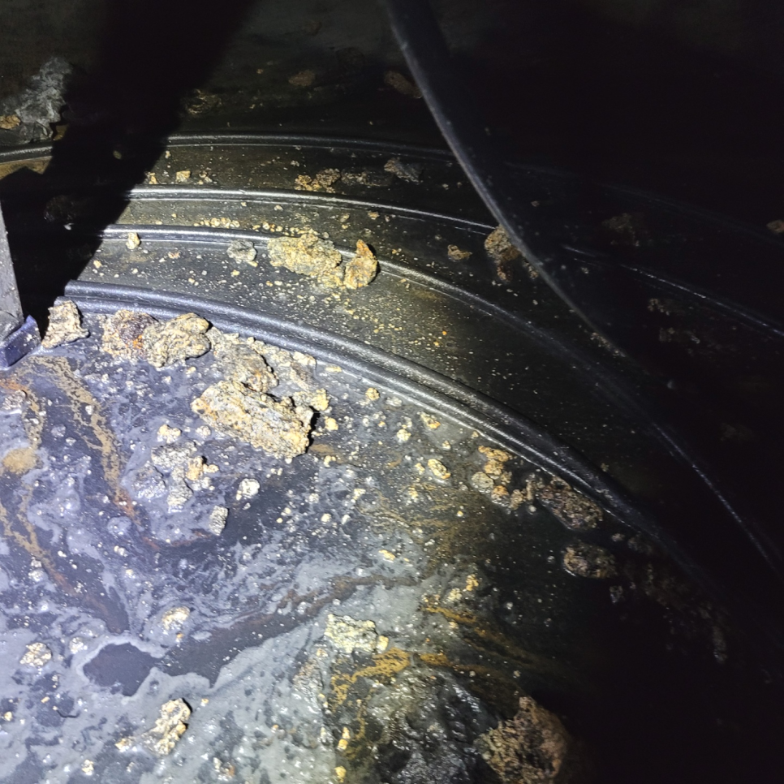
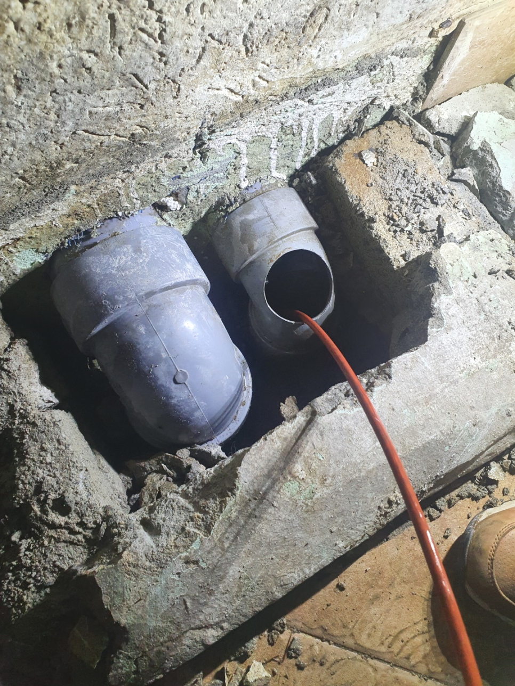
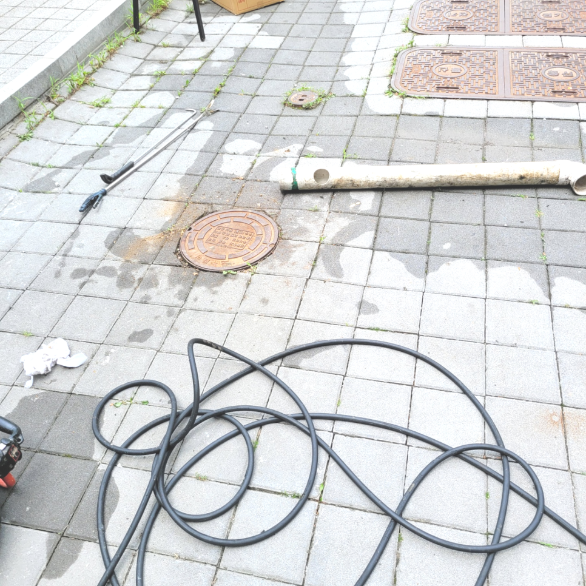
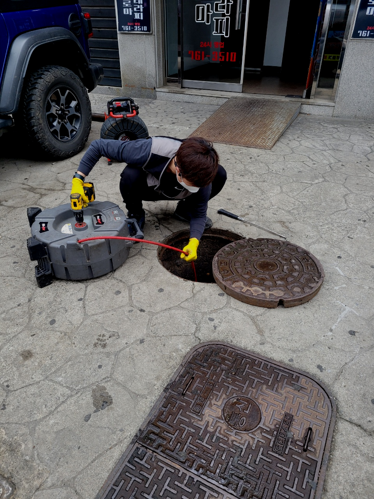
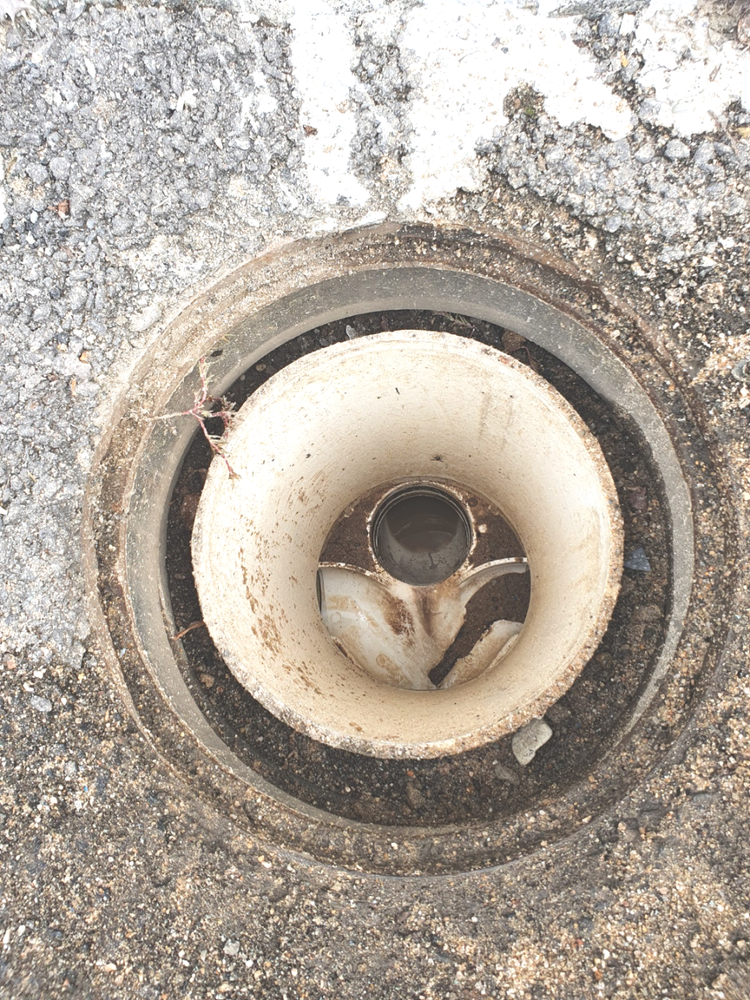
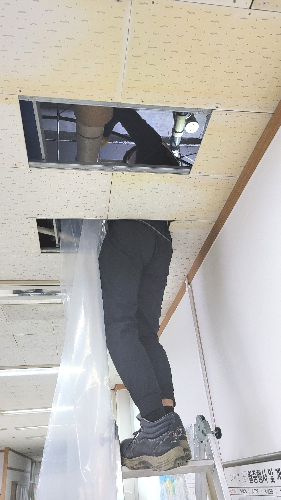

🏠 시흥 신천동 배수구역류 막힘 대야동 하수구뚫는곳 배관청소 설비
시흥 싱크대막힘 전문 시공 후기

📋 작업 개요
- 위치: 시흥
- 서비스 유형: 싱크대막힘, 변기막힘, 하수구막힘, 배관막힘, 누수수리, 역류해결, 뚫는업체, 배관청소, 고압세척
- 작업 일시: 2023. 11. 18. 22:53
- 업체명: 하수구수사대 (010-5615-2118)
🔍 문제 상황
어서오세요
설비전문업체 "하수구수사대"를 찾아주셔서 감사드려요^^
모든 사람들이 살아가는 공간과 환경은 비슷비슷하겠지만 배수배관의 위치나 모양,크기는 모두 다른 모습을 보이고 있습니다.
만약 퇴수배관 이물질이 없다면 작업할 곳에 약 5cm의 오차 범위 내에서 정확한 위치 파악이 가능합니다. 위치를 파악하고서는 바로 작업을 시작하지요. 이물질로 가득했던 배관에 물길을 터주기 위한 작업을 진행했는데요, 타공을 할 때에는 퇴수배관 상태를 고려해야 한답니다.
시흥 신천동 배수구역류 막힘 대야동 하수구뚫는곳 배관청소 설비

🔎 원인 분석
💡 전문가 진단: 정밀 진단 장비를 사용하여 슬러지의 고착 여부를 판명하고 타격/세척 작업을 실시했습니다.
이물질이 어느 정도 보이긴 했지만 심각한 수준은 아니었는데요. 하지만 구조적인 문제가 확인이 되었습니다. 이번 현장의 세대에 있는 싱크대의 배관는 공동으로 사용을 하는 배관에 합류가 되어 있었는데요.
제일 많이들 약품을 부어보셨을 텐데 오히려퇴수 안에 물질을밀어 넣어버리기 때문에 자칫 문제가 커져버릴 수 있습니다.개인이 혼자서 하기보다는전문적인 곳에 맡기셔야 합니다.꽉 막힌퇴수을 뚫게 되면 오랜 기간 동안 막히지 않습니다.
뚫음 현장뿐만 아니라 부속품 교체를 하거나 누수현장도 실생활에 필요한 모든 부분들을 도와드리고 있어요. 혼자서 어려울 경우 저희 배수구뚤어드림을 통해 도움을 받아보세요. 어려운 현장이라고 하여도 항상 완벽하게 작업해 드려요.
막힘 증상은 느닷없이 발생된 것은 아니고 막힘의 전조증상이 보이면서 심각한 배관막힘으로 전환이 되는 것입니다. 의뢰인께서 배관막힘을 인식 못하셔서 줄곧 이용을 하다가 오물 덩어리가 배관으로 흘러 들어가 쌓이면서 심한 막힘이 나타나는겁니다.
무심하게 골랐다가 물이 흐르지 않아 전화 걸어보면 돈을 다시 내야 하는 경우들도 빈번하죠. 모르는 일 취급하는 건데 잘못 사용한 바가 없는데도 불구하고 며칠 안에 재발하게 되는 것은 배출구업체의 과실이랍니다.
이러한 상황에 직면하였을 때에는 스프링 기계를 이용하는 것이 쉽지 않기에 고압세척을 진행해서 배수관믹힘을 깔끔히 해결해야 했었는데요. 우선 관련된 작업을 하기 위해서 사전 준비를 하였습니다.

🔧 작업 과정
방문하여 현장을 살펴보니 외관상으로는 문제가 되보이는 게 없었지만 내시경 등을 통해 배관의 내부를 살펴보았을 때 심각한 상황이었습니다.평소에는 괜찮았던 퇴수구 갑자기 막히거나 역류하게 된다면 누구나 당황스러우실겁니다.
하수막힘을 해결하기 위해서 우선 부품의 교체가 필요한지를 먼저 살펴야 하는데요, 이물질이 쉽게 유입될 수 있는 낡은 부품이나 녹슨 부품을 체해 주면 어느 정도 재발을 방지할 수 있게 됩니다.
이같은상황들은 경험해보지않으면 공감자체가 안되실텐데요. 배수관통수자체가 되지않는다면 참을수없을정도로 영향을끼치게되죠.이같은사유로인해 매번 전화를주실때면 촉박하시다는것을 확인하게된답니다.
배수 작업가능 기사가 소수이거나 지리적인한계가있다면 내방할수있는곳과 현장도착까지의시간에 제한이생기겠죠? 저희의경우는 전국여러지역에 뛰어난실력자인 배수 베테랑들이 의뢰자분의 고민들을해결하고있어요. 계신곳이어디라도 방문할수있는시스템들을 갖추고있기에 불러주신다면 1시간내로 내방하고있습니다
저희는 배수구 종합설비회사기에 뚫기만하는것이아니라 배관설비에관해서도 해결하고있어요.심각한냄새까지 저희들이해결 해드리고있어요
배출관막힘증상이 발생했다면 실력자에게 연락하시는게 좋은방법이에요. 그렇지만 보통은 거의 모든분들께서 각양각색의 배출관회사들중 정직한곳이 어디인지 알수는없습니다.배출관막힘 업체를 선정할땐 여러가지를 살펴봐야합니다.
어떠한상황인지에따라 처리하는방법이 배수관넘치는데 찌꺼기의 모양새가 생각보다 물렁하고 심하지않게 막혔으면 락스를반복해서 넣으신다음 없애는것도 좋은방법이에요
저희 업체는 다년간 쌓아온 여러 현장에서의 경험 및 노하우를 바탕으로 고객님들께 가장 빠르고 속 시원히 해결해 드릴 수 있는 배수 문제해결방법 및 예방법 등을 제시해 드리고 있습니다.
특별히 기름류의 조리를 하는 곳에서 더욱 많이 발생하는 기름 슬러지지만 빵이나 커피에도 기름기가 많아서 기름 슬러지가 잘 생기기 때문에 관리를 자주 해줘야 합니다.


✅ 작업 완료
일 년 안으로 똑같은 이유로 재발해버릴 시 즉시 출발하여 처음과 같이 서비스해 드리니까 이와 같은 요소들도 생각해 주신다면 염려되는 마음이 나아지실 것입니다
하수관 관련된 곳이라면 무엇이든 도맡아 하고 있으니 늦어지기 전에 막힌 배수관을 뚫어내고 싶으신 경우 밤낮없이 대기 중이니 통화 걸어 주시면 친절하게 맞이해 안내해 드립니다.
#하수구막힘 #하수구뚫음 #하수구역류 #씽크대막힘 #싱크대역류 #오수관막힘 #하수구청소 #욕실하수구막힘 #변기막힘 #하수구뚫는비용 #싱크대수리 #화장실막힘




⚠️ 베란다 누수 및 방수 관리 방법
- ✅ 비가 많이 올 때 창틀 주변이나 아래층 천장에 얼룩이 생기는지 정기적으로 확인해 보세요.
- ✅ 우수관 주변 실리콘 마감이 들뜨거나 깨진 틈새가 있는지 손상 여부를 수시로 체크하세요.
- ✅ 베란다 바닥 타일의 줄눈(메지)이 소실되면 그 틈으로 물이 침투하여 누수가 유발됩니다.
- ✅ 누수 의심 증상 발견 시 방치하면 아래층 손실이 커지므로 즉시 전문가의 진단을 받으십시오.
💡 핵심 정리
- 확실한 장비 작업(내시경 점검 및 샤프트 스케일링)으로 원인을 뿌리 뽑습니다.
- 작업 후 1년 이내에 동일한 부위 재발 시 100% 무상 A/S 서비스를 보장합니다.
- 서울 · 경기 · 인천 전 지역에 24시간 언제든 긴급 출동할 수 있도록 항시 대기 중입니다.
❓ 자주 묻는 질문 (FAQ)
🚨 시흥 싱크대막힘 문제로 고민이신가요?
정확한 원인 진단과 확실한 시공으로 재발 없는 해결을 약속드립니다.
24시간 긴급 출동 | 서울 · 경기 · 인천 전지역 | 1년 내 재발 시 무상 A/S